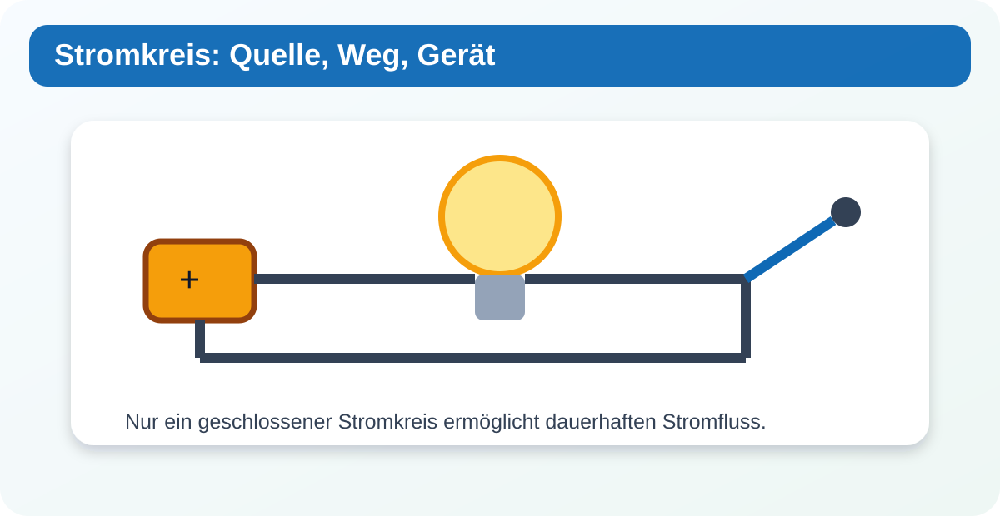
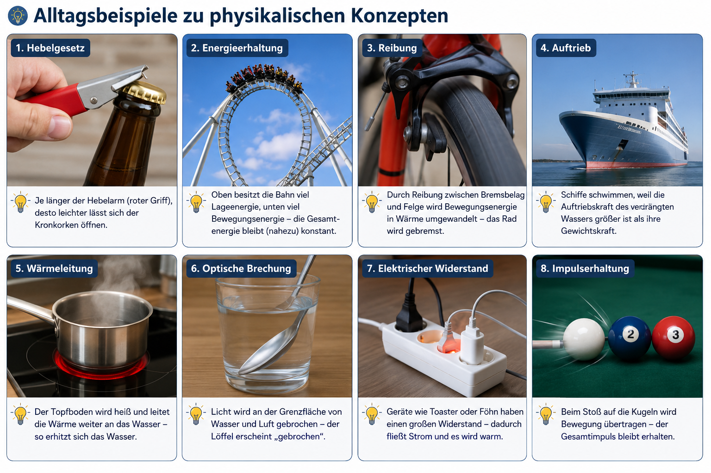
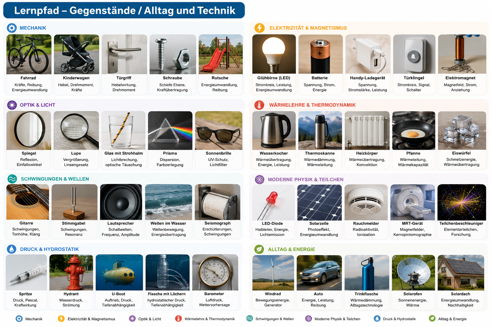

Leitfrage: Was muss zusammenkommen, damit elektrische Geräte arbeiten?
Du erkennst Stromkreis, Energiequelle, Verbraucher und Messgrößen als Grundideen der Elektrizitätslehre.


Vorwissen: einfache Stromkreise aus Klasse 5.
Alltagsbezüge:
FahrradlichtPowerbankLED-LampeTürklingel
Du brauchst:
Batterie oder KleinspannungsnetzgerätLampeSchalterKabel
Aufbau: Verbinde Batterie, Schalter und Lampe zu einem geschlossenen Stromkreis.
Nur Batterien oder Kleinspannung verwenden. Keine Steckdose.
Modellidee: Dauerhafter Strom benötigt einen geschlossenen Stromkreis und eine Energiequelle.
Wann kann in einem einfachen Stromkreis dauerhaft Strom fließen?
Ordne Quelle, Verbraucher und Schalter in einem einfachen Stromkreis.
Gib nur den Zahlenwert ein. Die Einheit notierst du im Heft.
PhET Circuit Construction Kit DC: Baue Batterie, Schalter und Lampe digital nach.
Digitale Anwendung öffnenFalls kein Internet oder kein passender Sensor verfügbar ist: Nutze die Modellgrafik und beschreibe eine erwartete Beobachtung.

Dauerhafter Strom benötigt einen geschlossenen Stromkreis und eine Energiequelle.
Schreibe den Merksatz in dein Heft und ergänze ein eigenes Beispiel.